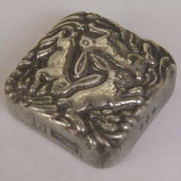
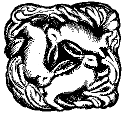

Limited edition, made from Cornish tin by Bigbury mint

From the roof boss of Widecombe church, Devon.
George Ewart Evans [12]
suggests that these animals are hares rather than rabbits,
because of their long ears, and that this is a pagan symbol.
I suspect that they are rabbits (an appropriate symbol for miners).
However, a pagan origin for the Tinners Guild is not totally inconceivable.
Tin Mining is possibly Britain's oldest industry: Greek and Phoenician
merchants came to the South West of Britain
(which they called the Cassiterides, or "Tin Islands"), to obtain tin.
The Tinner's link to the Birmingham Lunar Society,
through Rudolph Erich Raspe is also
interesting.